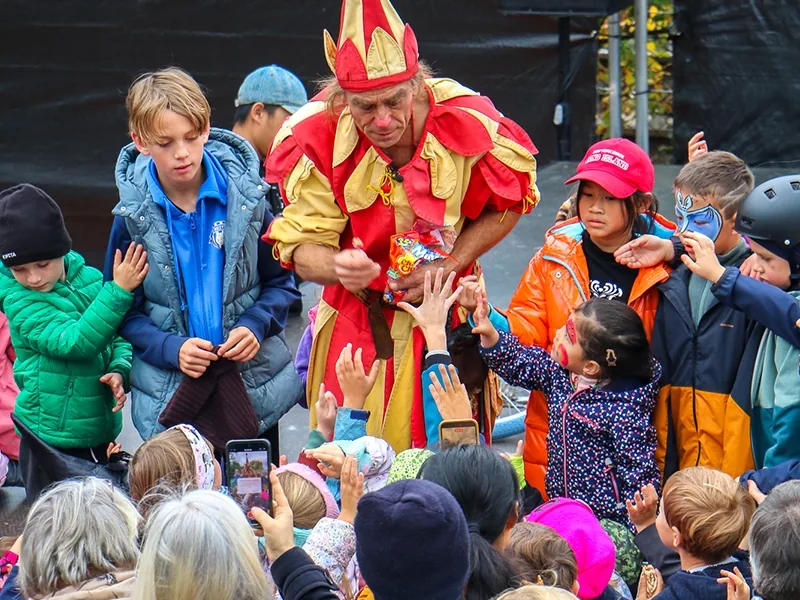
10. až 11. 10. 2026
Dýňové slavnosti
Nejoblíbenější víkend v našem zahradnictví. Program od 9 do 18 hodin, dýňové pivo z Břevnovského pivovaru.
Číst dálVenkovní i pokojové rostliny od českých pěstitelů i z Holandska, Itálie, Německa a Dánska. K tomu substráty, hnojiva, nářadí a dekorace. Otevřeno sedm dní v týdnu.
Naplánovat návštěvuOd pokojových palem po trvalky a skalničky.
25 hektarů u Českých Budějovic, rostliny zvyklé na naše podnebí.
Dárkové, svatební i smuteční kytice od našich aranžérek.
Nářadí, techniku a zahradní potřeby vybíráme od výrobců, které sami používáme. Na prodejně vám poradíme, co se na vaši zahradu opravdu hodí.
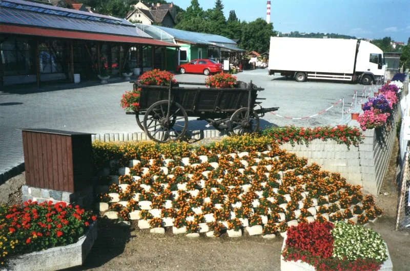
Je zde bohatý výběr všech možných kytek, keřů a stromů. Personál je milý a nápomocný.
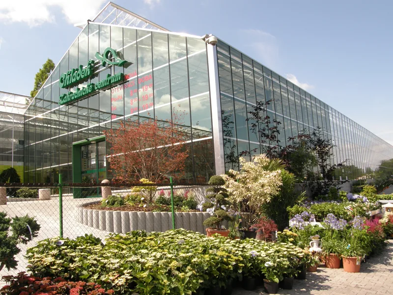
Rodinná tradice sahá do 19. století, kdy na tomto pozemku ve Střešovicích hospodařil praděda dnešního majitele. Centrum jsme otevřeli v roce 1992 na 320 m². Dnes máme přes 3 700 m² prosklené prodejny, venkovní zahradu a odborně vzdělaný tým, který vám rád poradí.
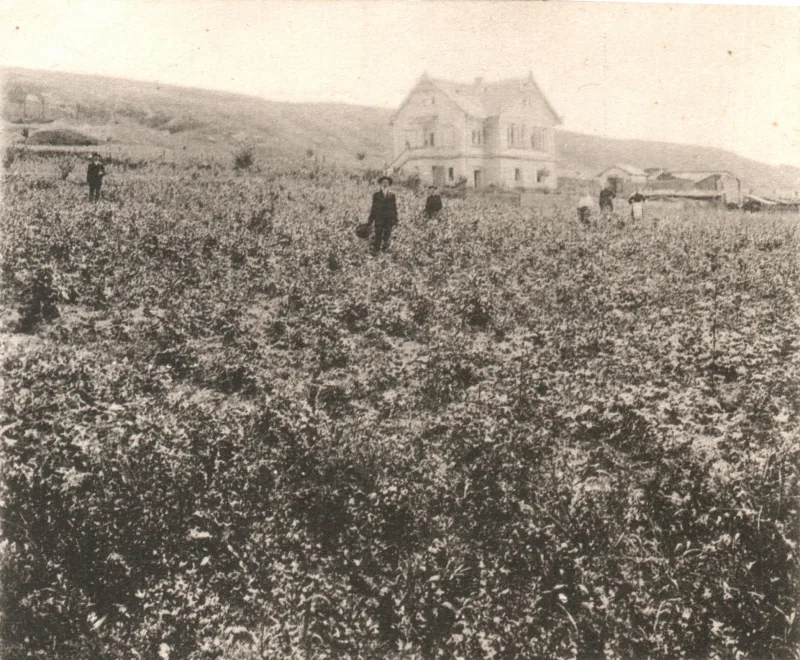
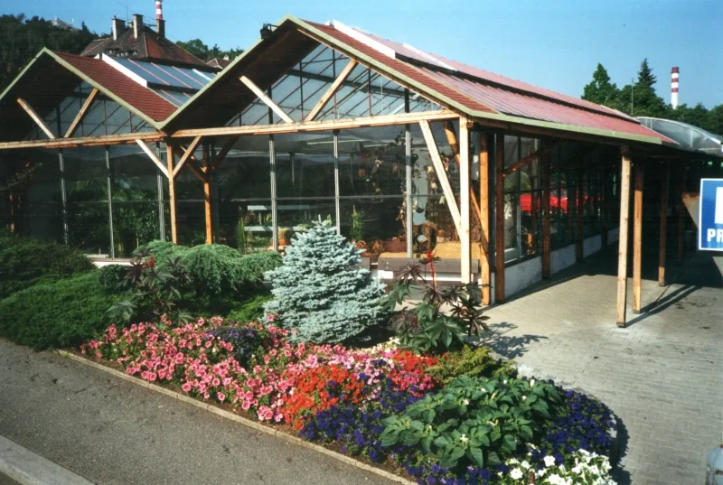
Řezané květiny nakupujeme několikrát týdně přímo na aukci v Aalsmeeru. Dřeviny pěstujeme sami. Zbytek vybíráme od prověřených českých a evropských dodavatelů.
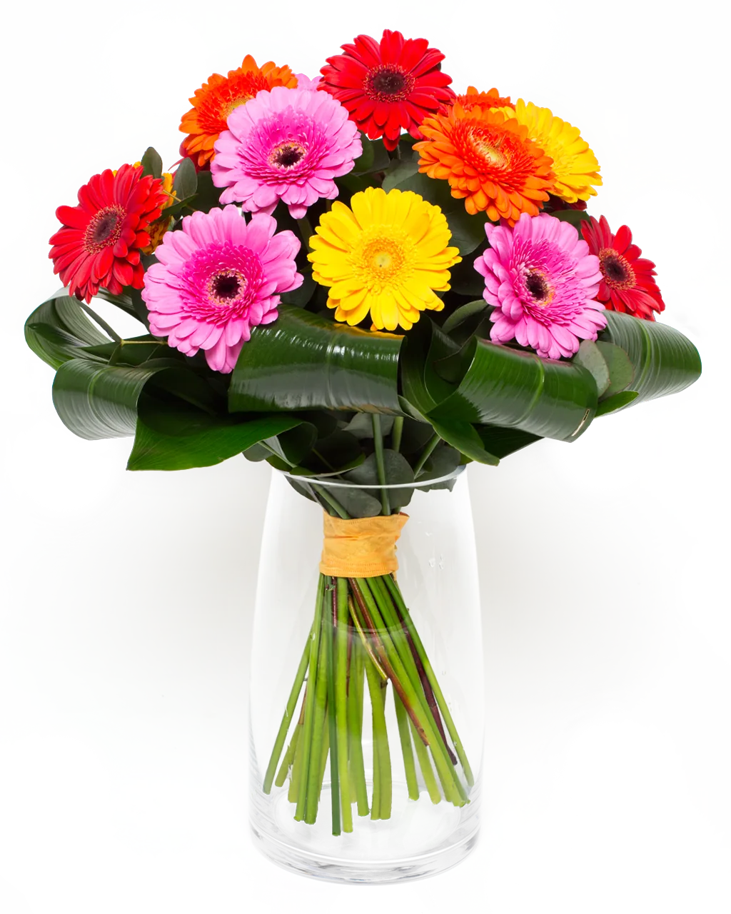
Dárkové, svatební i smuteční kytice. Větší zakázky prosíme objednat týden předem.
Více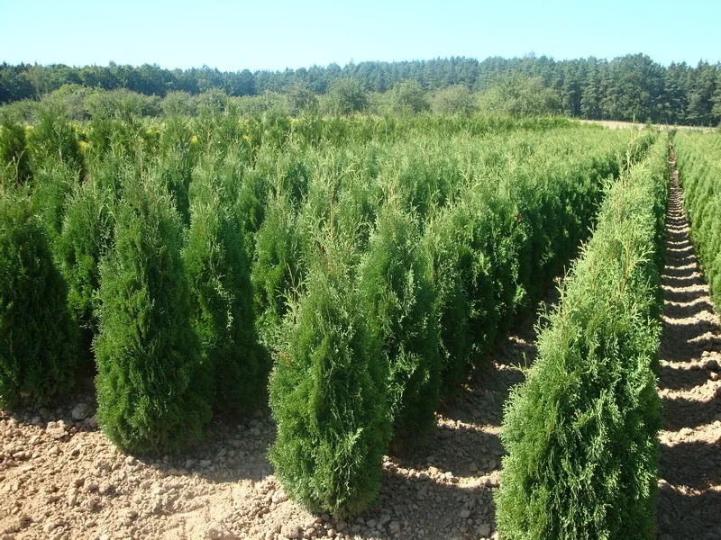
Jehličnany, keře i vzrostlé stromy z vlastní školky. Venkovní prodej od března do listopadu.
Více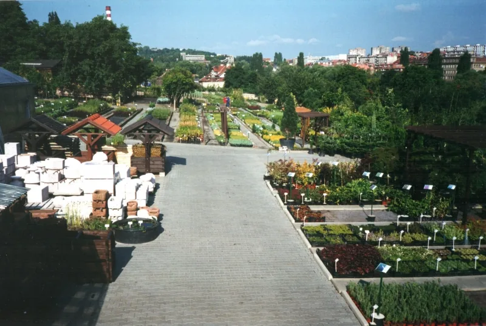
Pelargonie, surfinie, fuchsie, růže od Kordes a David Austin a široký výběr skalniček.
Více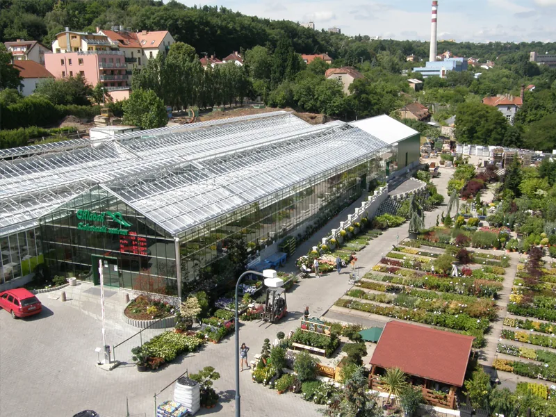
Substráty, hnojiva, osiva na více než 15 metrech regálu, nářadí Gardena a Fiskars.
Více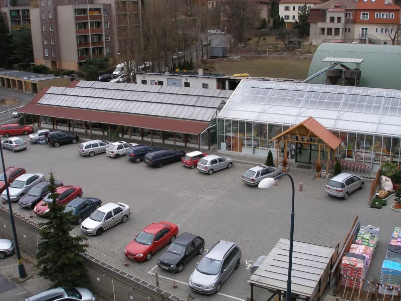
Rozvážíme nákupy nad 1 000 Kč. Za dopravu účtujeme 40 Kč za kilometr tam i zpět.
Více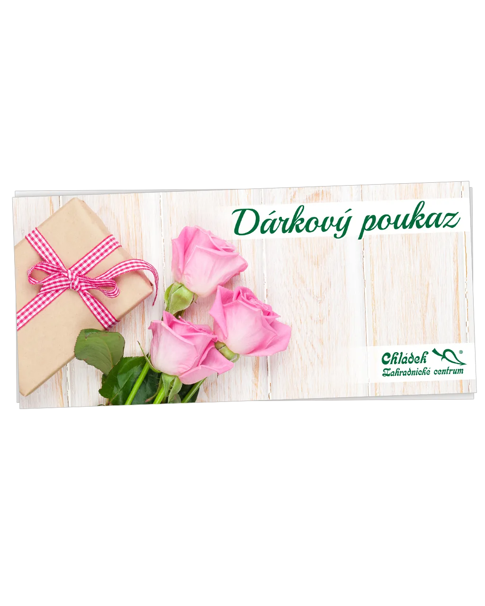
Darujte radost ze zahrady. Poukaz platí na celý sortiment v prodejně.
VíceZe dvou skleníků na restituovaném pozemku se během třiceti let stalo jedno z největších zahradnických center v Praze.
Celá historie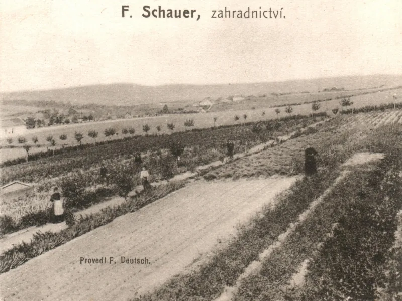
Na stejném pozemku pěstoval praděda dnešního majitele. Odtud se rodinné řemeslo dědí dál.
Číst dál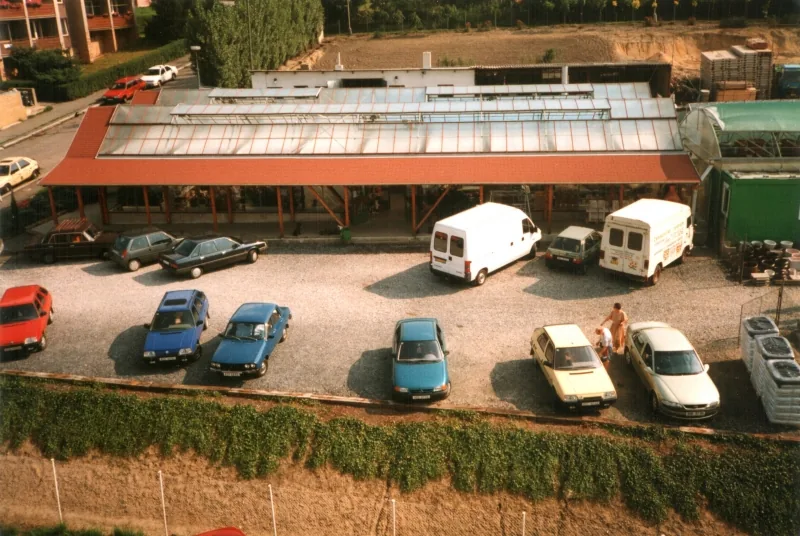
Manželé Chládkovi otevřeli prodejnu v roce 1992. V letech 1996 a 1998 přibyly další dvě lodě skleníků.
Číst dál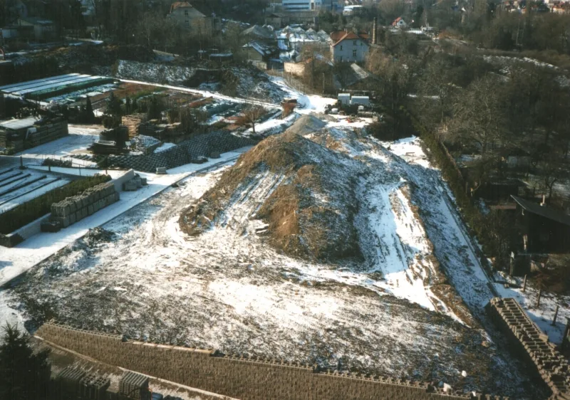
Prodejní plocha pod sklem vyrostla na 1 720 m². Zákazníci poprvé nakupují v jedné velké hale.
Číst dál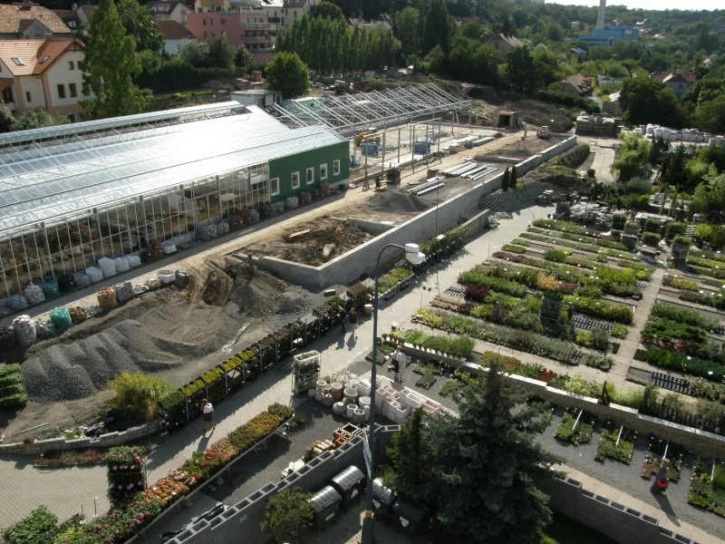
Na podzim 2008 přibylo dalších 2 000 m² a víc pokladen. V létě 2009 jsme otevřeli restauraci.
Číst dálV době nadnárodních hypermarketů chceme nabídnout nejvyšší kvalitu za co nejpříznivější cenu. A k tomu radu od lidí, kteří zahradničení vystudovali.
Všichni zaměstnanci mají zahradnické vzdělání a pravidelně absolvují další kurzy.
Dřeviny z naší školky netrpí dlouhým převozem ze zahraničí, a proto se lépe ujímají.
Několikrát týdně nakupujeme přímo na květinové burze v holandském Aalsmeeru.
Velké parkoviště přímo u prodejny, pět minut pěšky od tramvaje Baterie.
Tůje, cypřiše, okrasné trávy a vánoční stromky od roku 2000.
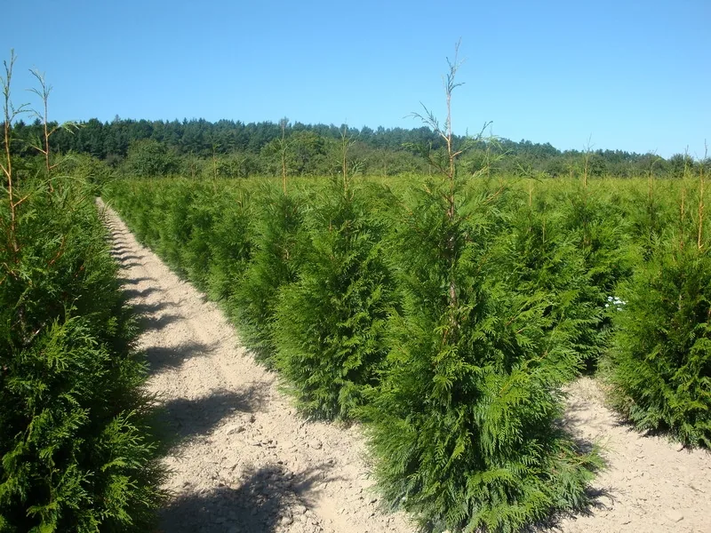
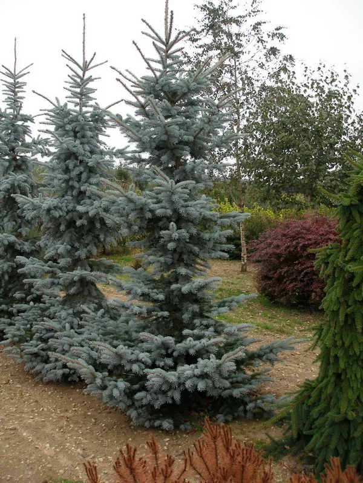
Chládkovi vedou centrum dodnes.
Přijeďte osobně, objednejte si kytici online nebo si nechte nákup přivézt. Jak se vám to hodí.
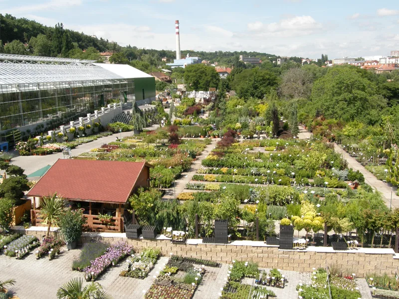
Projděte 3 700 m² prodejny a venkovní zahradu, nebo si kytici vyberte na e-shopu.
Zeptejte se našich zahradníků, co kam zasadit a jak se o rostlinu starat.
Parkujte zdarma u vchodu. Nákupy nad 1 000 Kč vám rádi přivezeme.
Nejbližší je metro Petřiny a tramvajová zastávka Baterie, odkud jsme asi pět minut chůze.
Hodnocení z Googlu, Facebooku a Firmy.cz. Přes tisíc lidí nám tam nechalo zpětnou vazbu.
„Příjemné zahradnictví v centru Prahy. Parkoviště je prostorné, ani o víkendu nikdy nebyl problém najít volné místo. Mají zde vynikající kavárnu a restauraci s možností venkovního posezení.“
„Obrovské nádherné zahradnictví s venkovní i vnitřní prodejní plochou s širokým sortimentem rostlin, stromů, keřů a zahradních potřeb.“
„Bezva místo.“
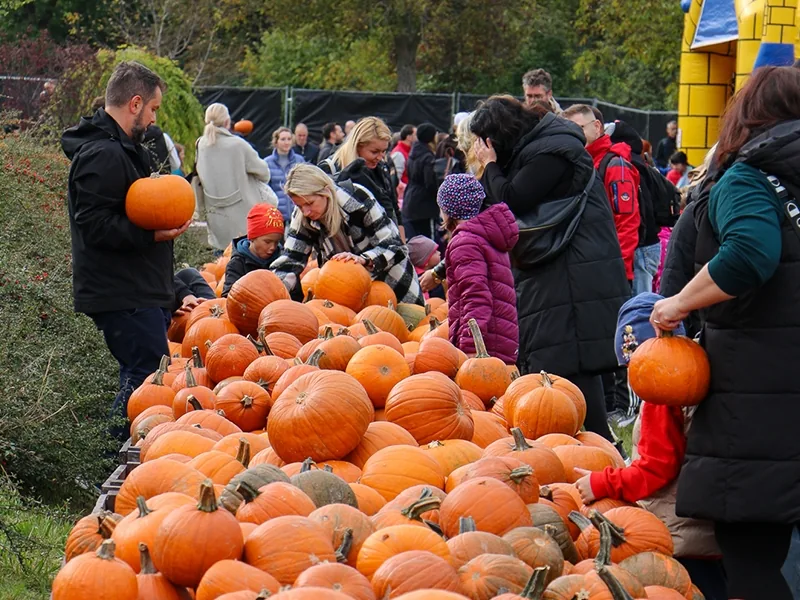
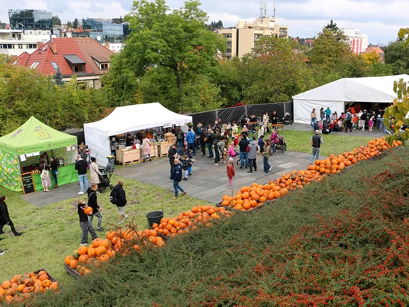
Dlabání dýní, kejklíř Pupa, malování na obličej a skákací hrad. Vstup zdarma, dýně, šablony i nářadí máme připravené.
Program slavností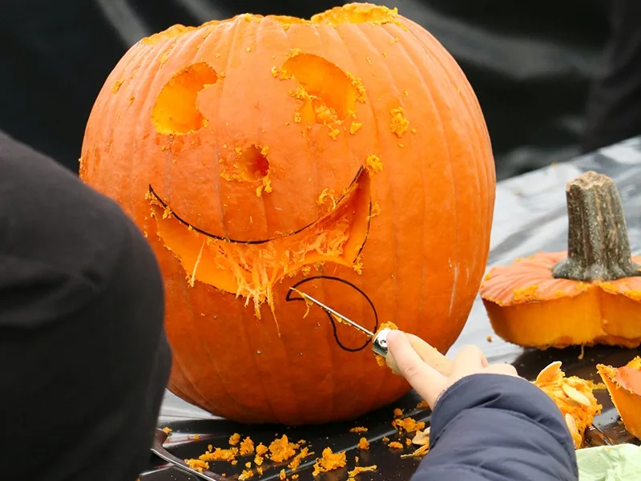
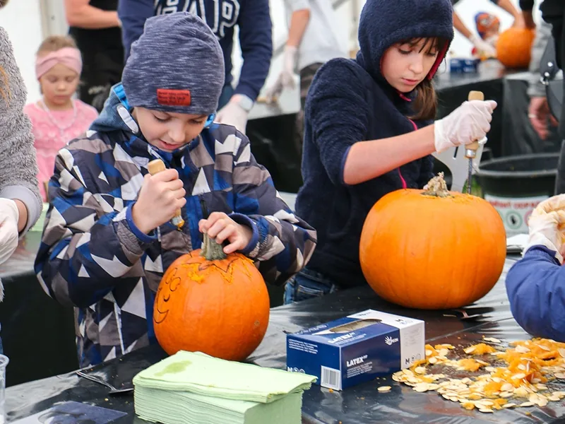
Co se v zahradnictví děje tento podzim. Novinky posíláme také ve zpravodaji.
Všechny novinky
Nejoblíbenější víkend v našem zahradnictví. Program od 9 do 18 hodin, dýňové pivo z Břevnovského pivovaru.
Číst dál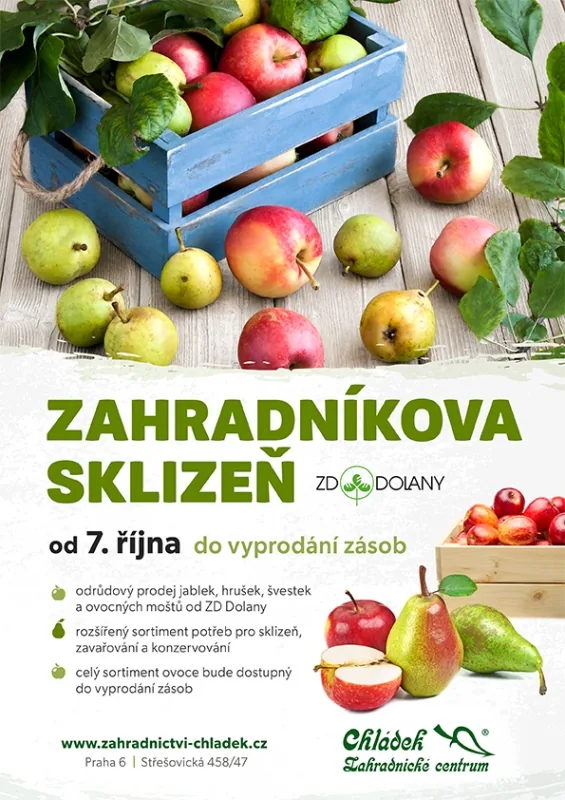
Jablka, hrušky a švestky od pěstitele ZD Dolany z České Skalice. Prodáváme do vyprodání zásob.
Číst dál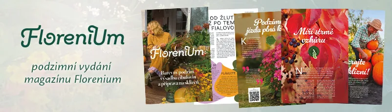
Nové číslo zahradnického magazínu si vyzvedněte zdarma u pokladen.
Číst dál